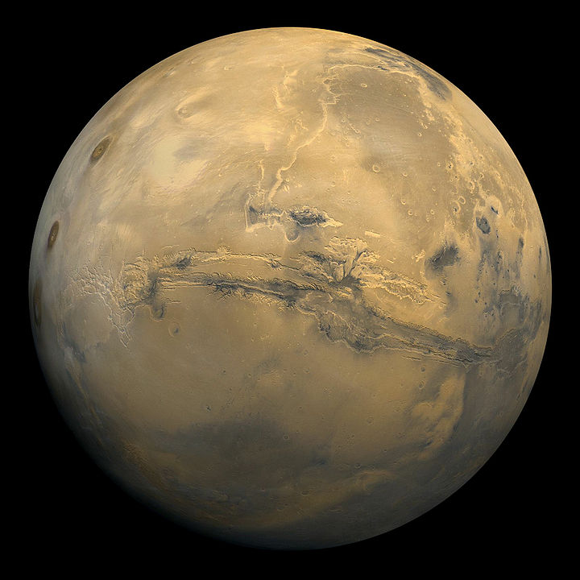
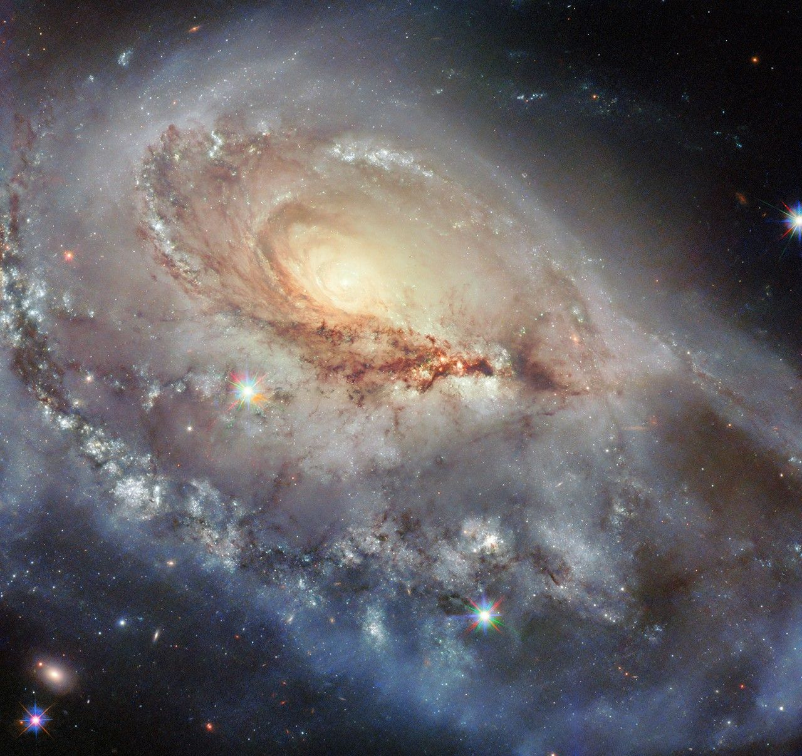
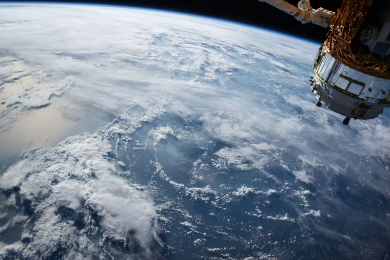
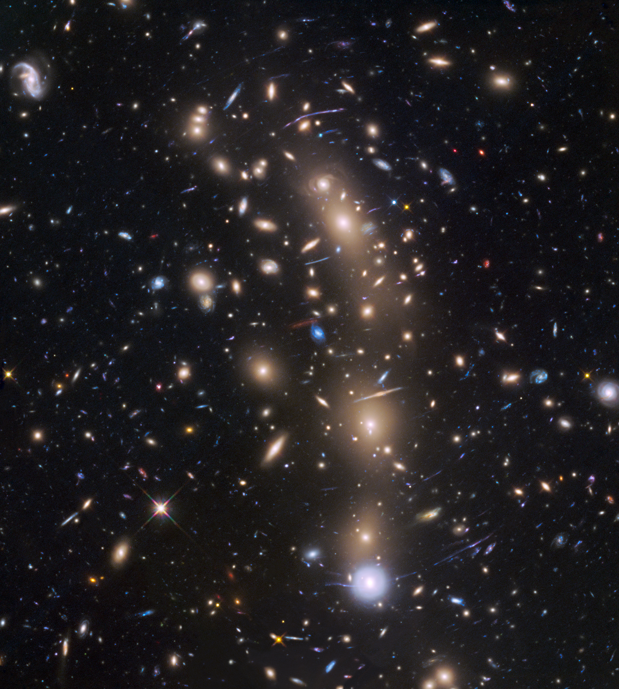
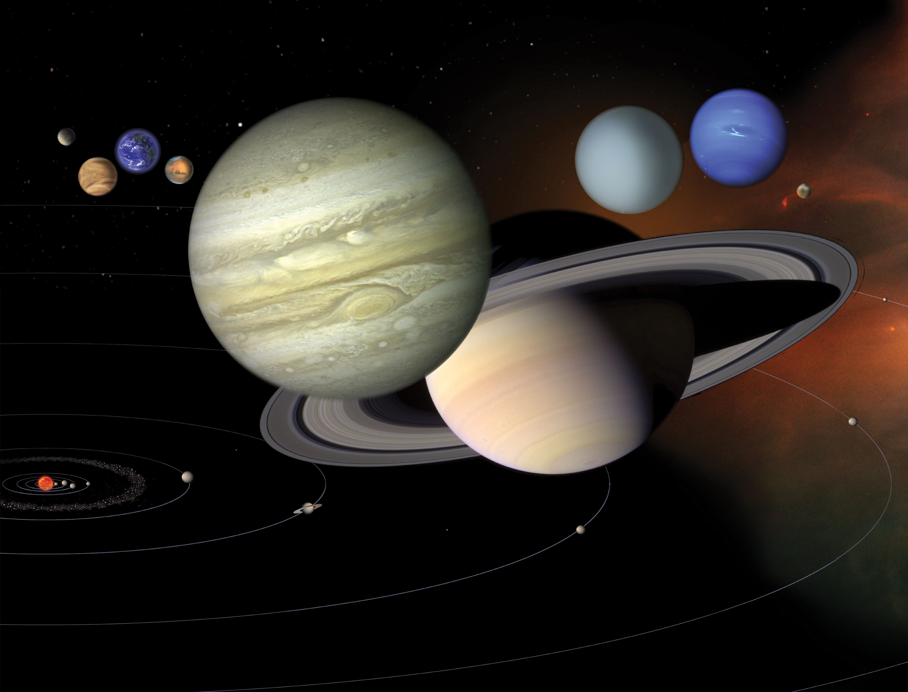

Марс
Четвёртая планета от Солнца. Его красноватый оттенок связан с оксидами железа в пыли и породах. Марс изучают орбитальные аппараты и марсоходы.
Подробнее о МарсеТвоя точка входа во Вселенную
Исследуй далёкие галактики, знакомься с планетами Солнечной системы и узнавай, какие удивительные явления можно увидеть на ночном небе. Большие открытия начинаются с любопытства.
Научные факты · Понятные объяснения · Практические советы
Исследуй Вселенную
От нашего космического дома до далёких звёздных систем — познакомься с удивительными объектами Вселенной.

Четвёртая планета от Солнца. Его красноватый оттенок связан с оксидами железа в пыли и породах. Марс изучают орбитальные аппараты и марсоходы.
Подробнее о Марсе
Газовый гигант, знаменитый яркой системой колец из частиц льда и каменистого материала. У Сатурна множество известных спутников, включая Титан.
Подробнее о Сатурне
Ближайшая к Земле звезда и главный источник энергии для нашей планеты. В её ядре энергия выделяется при термоядерном синтезе водорода в гелий.
Подробнее о Солнце
Гигантские системы из звёзд, газа, пыли и тёмной материи, связанных гравитацией. Солнечная система находится в галактике Млечный Путь.
Подробнее о галактикахСмотри вверх
Ночное небо постоянно меняется. Узнай, какие события произойдут в ближайшее время, и подготовься к наблюдениям.
Метеорный поток, порождённый кометой Галлея. Его радиант расположен в созвездии Ориона, а скорость метеоров — одна из самых высоких среди потоков.
Длительный поток, связанный с кометой Энке. Метеоры обычно медленные и яркие, иногда образуют заметные огненные шары.
Поток с радиантом в созвездии Льва, связанный с кометой 55P/Темпеля — Туттля. В отдельные годы порождает настоящие метеорные штормы.
Один из самых обильных потоков года. Его источником считают астероид 3200 Фаэтон, а метеоры движутся медленно и хорошо видны невооружённым глазом.
Календарь наблюдений NASA ↗ · Астрономический календарь Sea and Sky ↗
Открыть полный календарь астрономических событий ↗ — все ближайшие явления, даты и условия их наблюдения.
Наука без границ
Свежие материалы о миссиях, телескопах и планетных исследованиях. Ссылки ведут к публикациям научных организаций — NASA, ESA и их научных порталов.

Программа Artemis готовится к новым этапам лунных исследований, а межпланетные аппараты — Dragonfly к Титану и MMX к спутнику Марса Фобосу — проходят финальные испытания перед запуском.
Читать о миссиях NASA
Обсерватории James Webb, Hubble и Euclid находят новые области звёздообразования, а открытая Euclid комета C/2026 S1 стала доступна для наблюдений астрономам по всему миру.
Читать о Вселенной на NASA Science
Марсоход Perseverance изучает марсианскую пыль — эти данные помогут защитить будущие экипажи, а европейские миссии исследуют ледяные спутники Юпитера и Сатурна.
Читать об исследованиях планет на ESAДля актуальных публикаций посетите NASA News или ESA Newsroom. Материалы на этой странице не являются автоматически обновляемой лентой; даты публикаций соответствуют датам появления заметок на этой странице.
Твоё первое наблюдение
Для знакомства с астрономией не обязательно сразу покупать телескоп. Начни с простых шагов и постепенно открывай новые объекты.
По возможности отойди от ярких фонарей и освещённых зданий. За городом слабые звёзды и Млечный Путь обычно заметнее. Дай глазам 20–30 минут на адаптацию к темноте.
Планетарий или интерактивная карта помогут определить созвездия и положение планет для твоего местоположения. Сверяй дату, время и направление взгляда.
Невооружённым глазом можно наблюдать Луну, яркие планеты, созвездия и метеоры. В бинокль удобно рассматривать лунные кратеры и некоторые звёздные скопления.
Выбирай ясную погоду, одевайся по сезону и сообщай близким, куда направляешься. Никогда не смотри на Солнце без специального сертифицированного солнечного фильтра.
Используй интерактивную карту, чтобы найти созвездия, планеты и другие объекты, доступные для наблюдения.
Дополнительно: карта светового загрязнения поможет подобрать более тёмное место для наблюдений.
Вселенная ждёт
Узнавай больше, задавай вопросы и не переставай удивляться. Путешествие по Вселенной начинается прямо здесь.
Вернуться к небесным объектам